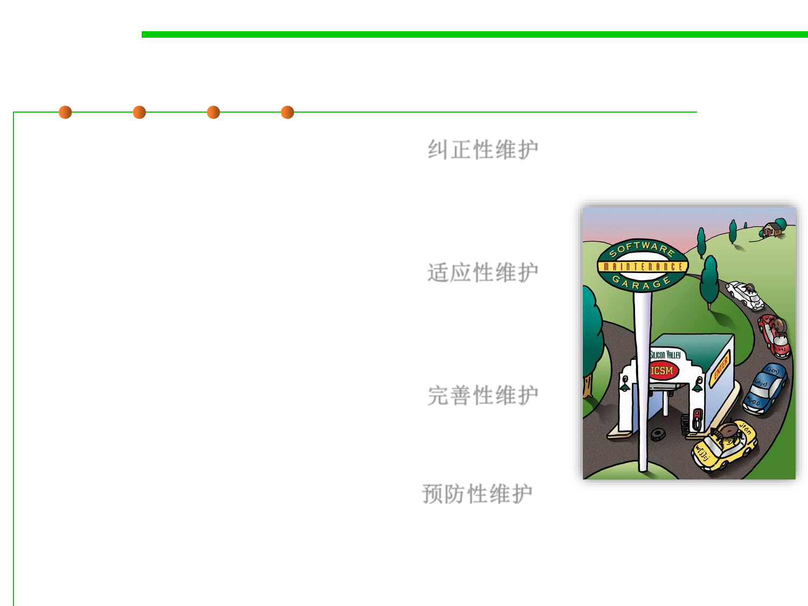

6.1 Metrics and Construction Principles for Maintainability
Types of software maintenance
▪ Corrective maintenance
25% 纠正性维护
– Reactive modification of a software product
performed after delivery to correct discovered
problems;
▪ Adaptive maintenance
21% 适应性维护
– Modification of a software product performed after
delivery to keep a software product usable in a
changed or changing environment;
▪ Perfective maintenance
50% 完善性维护
– Enhancement of a software product after delivery to
improve performance or maintainability;
▪ Preventive maintenance
4% 预防性维护
– Modification of a software product after delivery to
detect and correct latent faults in the software product
before they become effective faults.